Creates a triangular (ternary) scatter plot for **three** numeric variables Each point is coloured by the variable with the largest value and can be filtered by (i) Entropy score ranging from (0 to 1.585) and (ii) overall score
The plot is useful for visualising “winner-takes-all” behaviour in three-way comparisons, e.g. gene expression in *A*, *B*, *C* conditions.
Arguments
- x
A numeric
data.frame/matrix**or** aSummarizedExperiment.- column_name
Character. Names (or indices) of the three columns to visualise. If
NULL, the first three numeric columns are used.- entropyrange
Numeric. Keep points whose entropy lies inside this interval. Default is
c(0,Inf)- maxvaluerange
Numeric. Keep points whose values lies inside this interval. Default is
c(0,Inf)- col
Character. Colors for each variable.
- background_col
Character. Color for the observations outside
entropyrangeandmaxvaluerange- output_table
Logical. If
TRUEreturns the processed data frame.- plotAll
Logical. If
TRUE, filtered points are shown inbackground_col; ifFALSE, they are omitted.- cex, pch
Base-graphics point size / symbol.
- assay_name
(SummarizedExperiment only) Which assay to use. Default: the first assay.
- label
Logical. If
TRUE, label the vertices of the triangle- push_text
Numeric. Expands or contracts text label positions.
Value
If output_table = TRUE, a data.frame with the original three
columns plus:
comx,comy— Cartesian coordinates in the triangle;color— final plotting colour;entropy— Entropy scores for each gene;max_counts— Maximum score across variables
Details
The function expects three numeric columns. If the experiment has more than
three columns, the name of the columns of interest can be specified by using
the parameter column_name. If x is
a SummarizedExperiment, it extracts the indicated assay and extracts
the columns of interest
It also uses:
- centmass() for computing comx and comy.
- entropy() for computing Shannon entropy, stored in the
entropy column. Between three variables, entropy rangeS between
0 and 1.585.
The ternary vertices are fixed at \(( \sin(0), \cos(0) )\), \(( \sin(2\pi/3), \cos(2\pi/3) )\) and \(( \sin(4\pi/3), \cos(4\pi/3) )\).
Examples
library(SummarizedExperiment)
library(airway)
data('airway')
se <- airway
# Only use a random subset of 1000 rows
set.seed(123)
idx <- sample(seq_len(nrow(se)), size = min(1000, nrow(se)))
se <- se[idx, ]
## Normalize the data first using tpm_normalization
rowData(se)$gene_length <- rowData(se)$gene_seq_end -
rowData(se)$gene_seq_start
se <- tpm_normalization(se, log_trans = TRUE, new_assay_name = 'tpm_norm')
# -------------------------------
# 1) Using a data.frame
# -------------------------------
df <- assay(se, 'tpm_norm') |> as.data.frame()
# Choose three columns of interest, in this case 'SRR1039508', 'SRR1039516'
# and 'SRR1039512'
# Default Behaviour
plot_triangle(x = df,
column_name = c("SRR1039508", "SRR1039516", 'SRR1039512'),
output_table = FALSE)
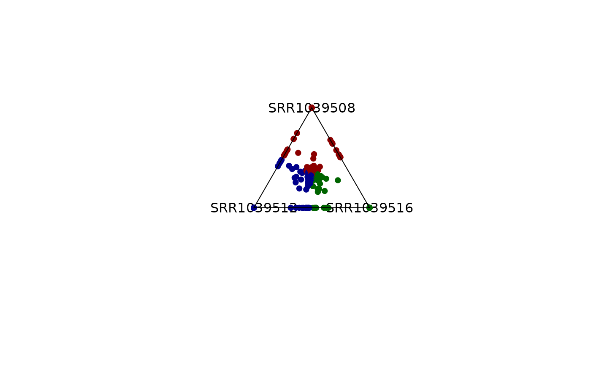
# Colors can be modified
plot_triangle(x = df,
column_name = c("SRR1039508", "SRR1039516", 'SRR1039512'),
output_table = FALSE,
col = c('indianred', 'lightgreen', 'lightblue'))
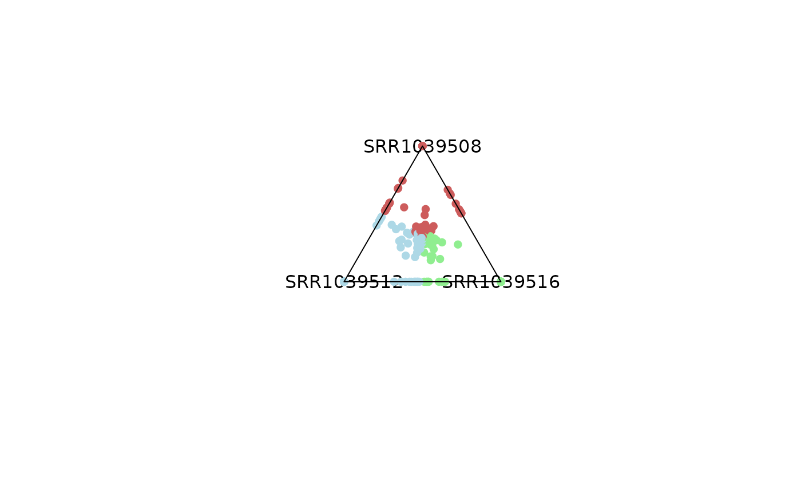
# Emphasis can be applied to highly dominant variables by controling
# entropy parameter,
# values outside of that range will be colored smokewhite.
plot_triangle(x = df,
column_name = c("SRR1039508", "SRR1039516", 'SRR1039512'),
output_table = FALSE,
col = c('indianred', 'lightgreen', 'lightblue'),
entropyrange = c(0, 0.1))
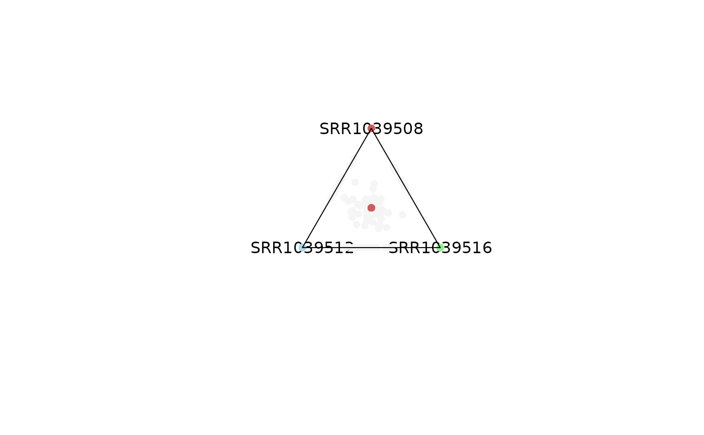
# Points in the center are a reflection of genes with expression levels = 0.
# This can be modified by adjusting the maxvalue range
plot_triangle(x = df,
column_name = c("SRR1039508", "SRR1039516", 'SRR1039512'),
output_table = FALSE,
col = c('indianred', 'lightgreen', 'lightblue'),
entropyrange = c(0, 0.1),
maxvaluerange = c(0.1, Inf))
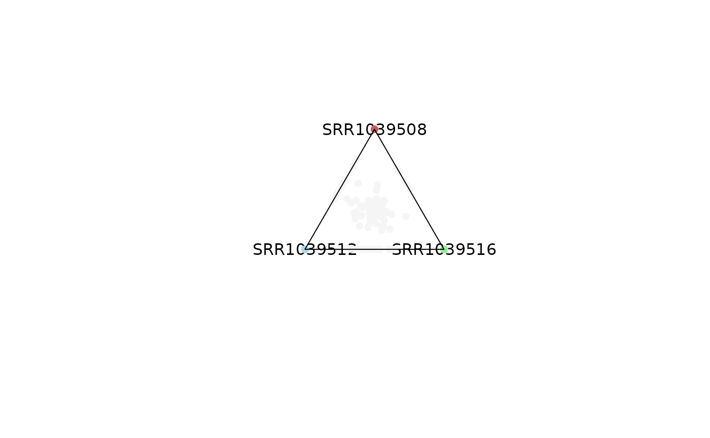
# By controling entropy range, you can observe different types of genes.
# Values closer to 0 represent dominance and closer to 1.6 shareness.
plot_triangle(x = df,
column_name = c("SRR1039508", "SRR1039516", 'SRR1039512'),
output_table = FALSE,
col = c('indianred', 'lightgreen', 'lightblue'),
entropyrange = c(0, 0.4),
maxvaluerange = c(0.1, Inf))
plot_triangle(x = df,
column_name = c("SRR1039508", "SRR1039516", 'SRR1039512'),
output_table = FALSE,
col = c('indianred', 'lightgreen', 'lightblue'),
entropyrange = c(0.4, 1.3),
maxvaluerange = c(0.1, Inf))
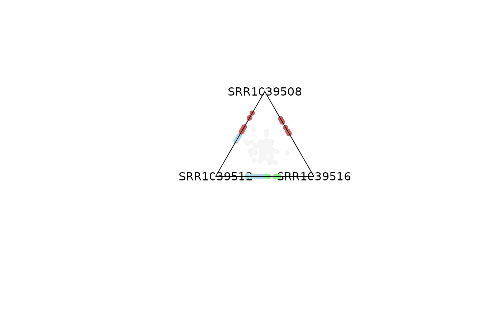
plot_triangle(x = df,
column_name = c("SRR1039508", "SRR1039516", 'SRR1039512'),
output_table = FALSE,
col = c('indianred', 'lightgreen', 'lightblue'),
entropyrange = c(1.3, Inf),
maxvaluerange = c(0.1, Inf))
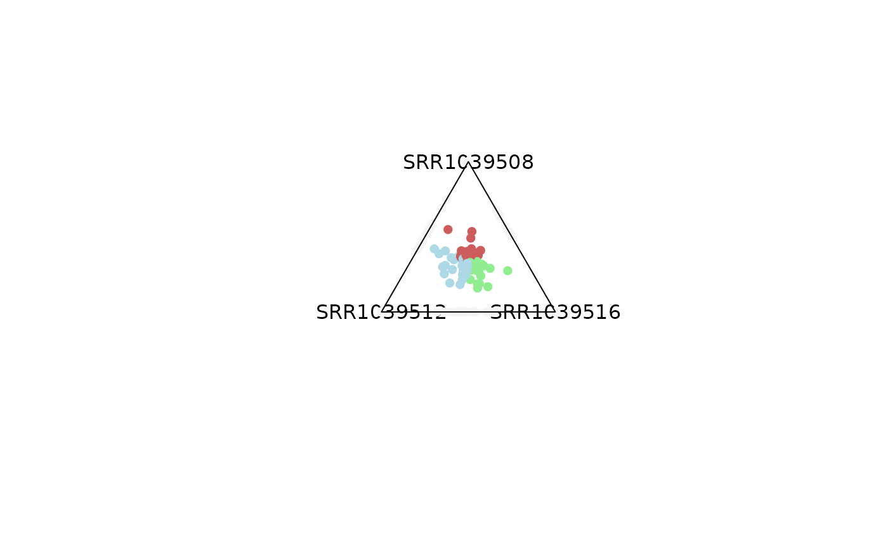
# Same analysis can be performed by filtering out genes with low expression
# values
plot_triangle(x = df,
column_name = c("SRR1039508", "SRR1039516", 'SRR1039512'),
output_table = FALSE,
col = c('indianred', 'lightgreen', 'lightblue'),
entropyrange = c(1.2, Inf),
maxvaluerange = c(2, Inf))
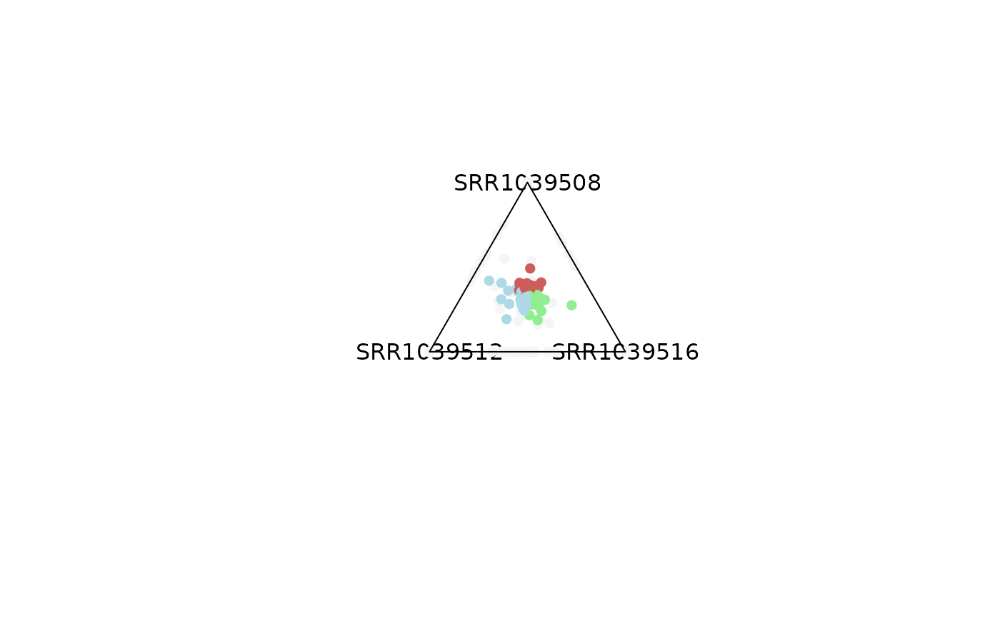
plot_triangle(x = df,
column_name = c("SRR1039508", "SRR1039516", 'SRR1039512'),
output_table = FALSE,
col = c('indianred', 'lightgreen', 'lightblue'),
entropyrange = c(1.2, Inf),
maxvaluerange = c(5, Inf))
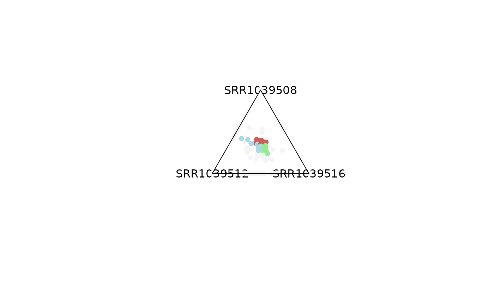
plot_triangle(x = df,
column_name = c("SRR1039508", "SRR1039516", 'SRR1039512'),
output_table = FALSE,
col = c('indianred', 'lightgreen', 'lightblue'),
entropyrange = c(1.2, Inf),
maxvaluerange = c(10, Inf))
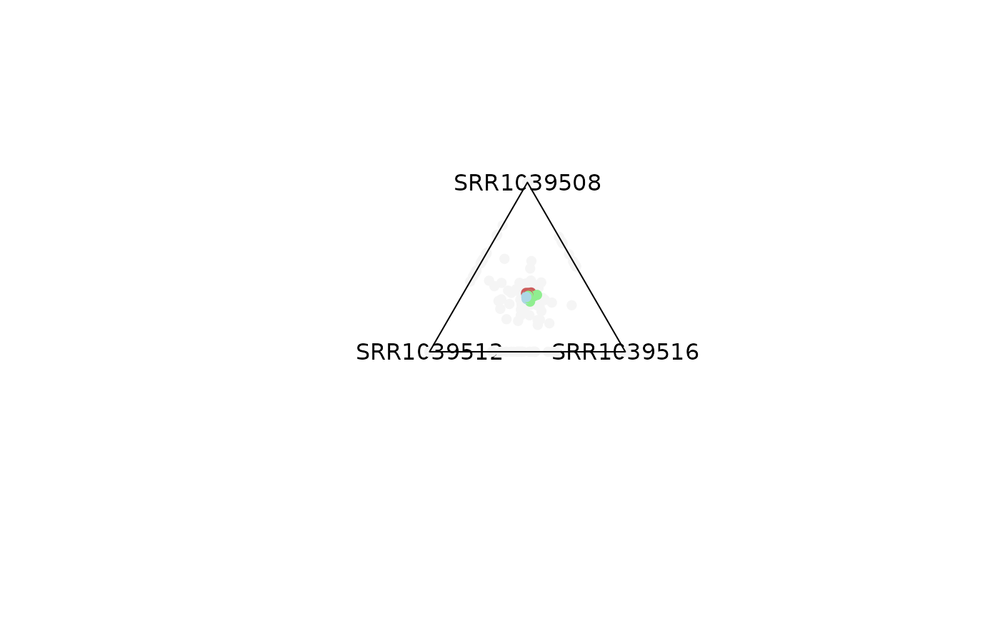
# Background points can be removed
plot_triangle(x = df,
column_name = c("SRR1039508", "SRR1039516", 'SRR1039512'),
output_table = FALSE,
col = c('indianred', 'lightgreen', 'lightblue'),
entropyrange = c(1.2, Inf),
maxvaluerange = c(2, Inf),
plotAll = FALSE)
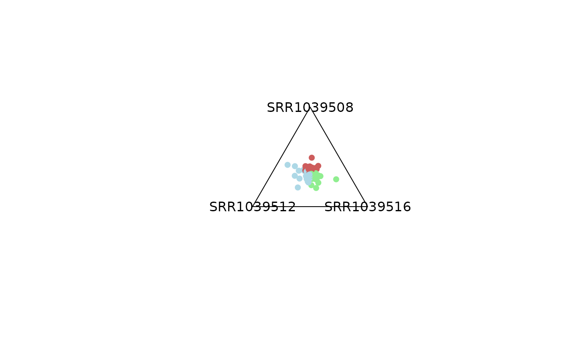
# -------------------------------
# 1) Using a SummarizedExperiment
# -------------------------------
plot_triangle(x = se,
column_name = c("SRR1039508", "SRR1039516", 'SRR1039512'),
output_table = FALSE,
col = c('darkred', 'darkgreen', 'darkblue'),
entropyrange = c(0, 0.4),
maxvaluerange = c(0.1, Inf),
assay_name = 'tpm_norm')
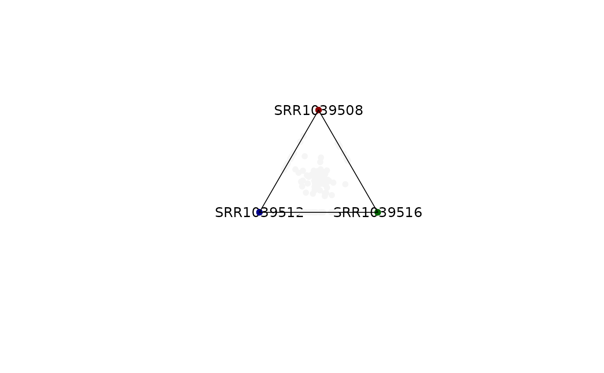
plot_triangle(x = se,
column_name = c("SRR1039508", "SRR1039516", 'SRR1039512'),
output_table = FALSE,
col = c('darkred', 'darkgreen', 'darkblue'),
entropyrange = c(0.4, 1.3),
maxvaluerange = c(0.1, Inf),
assay_name = 'tpm_norm')
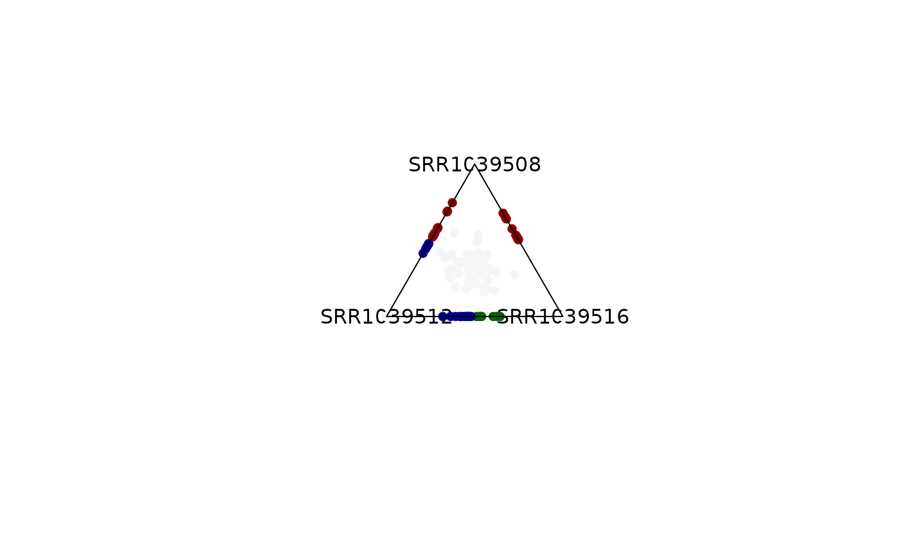
plot_triangle(x = se,
column_name = c("SRR1039508", "SRR1039516", 'SRR1039512'),
output_table = FALSE,
col = c('darkred', 'darkgreen', 'darkblue'),
entropyrange = c(1.3, Inf),
maxvaluerange = c(0.1, Inf),
assay_name = 'tpm_norm')
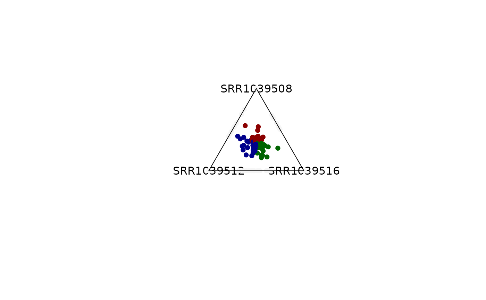
### Obtaining the DF output for the analysis
object = plot_triangle(x = se,
column_name = c("SRR1039508", "SRR1039516",
'SRR1039512'),
output_table = TRUE,
col = c('darkred', 'darkgreen', 'darkblue'),
entropyrange = c(1.3, Inf),
maxvaluerange = c(0.1, Inf),
assay_name = 'tpm_norm')
head(object)
#> max_counts comx comy a b
#> ENSG00000260166 0.000000 0.0000000000 0.000000000 0.0000000 0.0000000
#> ENSG00000266931 0.000000 0.0000000000 0.000000000 0.0000000 0.0000000
#> ENSG00000104774 10.691031 -0.0009644106 0.004970639 0.3366471 0.3311197
#> ENSG00000267583 0.000000 0.0000000000 0.000000000 0.0000000 0.0000000
#> ENSG00000227581 4.845949 0.0000000000 1.000000000 1.0000000 0.0000000
#> ENSG00000227317 0.000000 0.0000000000 0.000000000 0.0000000 0.0000000
#> c Entropy color
#> ENSG00000260166 0.0000000 0.000000 whitesmoke
#> ENSG00000266931 0.0000000 0.000000 whitesmoke
#> ENSG00000104774 0.3322333 1.584926 darkred
#> ENSG00000267583 0.0000000 0.000000 whitesmoke
#> ENSG00000227581 0.0000000 0.000000 whitesmoke
#> ENSG00000227317 0.0000000 0.000000 whitesmoke